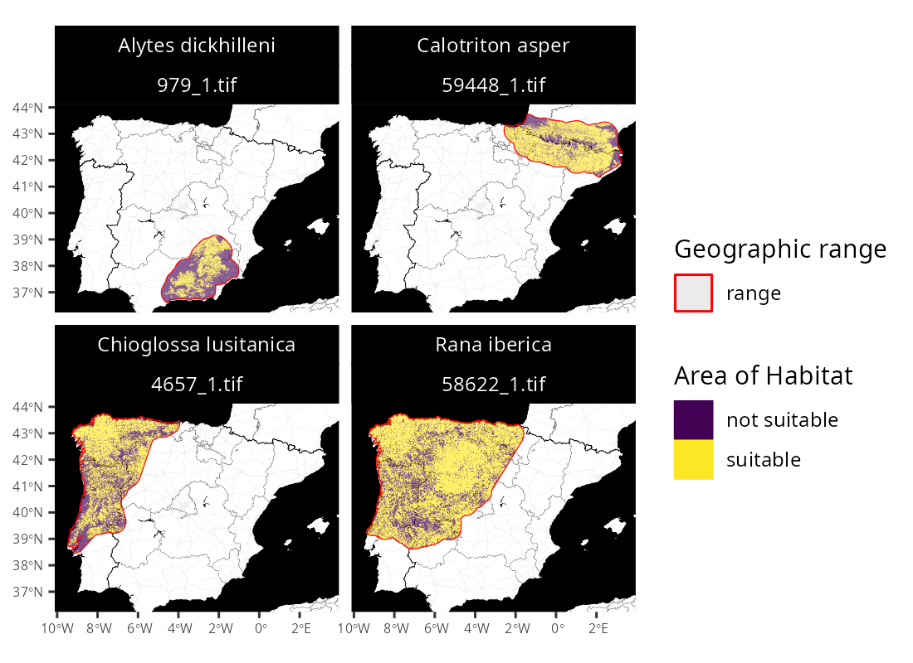

aoh: Create Area of Habitat Data
Overview
Area of Habitat (AOH) maps aim to delineate the spatial distribution of suitable habitat for a species (Brooks et al. 2019). They are used to assess performance of protected area systems, measure impacts of threats to biodiversity, and identify priorities for conservation actions (e.g., Rondinini et al. 2005; Tracewski et al. 2016; Durán et al. 2021). These maps are generally produced by obtaining geographic range data for a species, and then removing areas that do not contain suitable habitat or occur outside the known elevational limits for the species (Brooks et al. 2019). To help make these maps accessible, the aoh R package provides routines for automatically creating Area of Habitat data based on the International Union for Conservation of Nature (IUCN) Red List of Threatened Species. After manually downloading species range data from the IUCN Red List, users can import them (using read_spp_range_data()), prepare them and collate additional information for subsequent processing (using create_spp_info_data()), and then create Area of Habitat data (using create_spp_aoh_data()). Global elevation and habitat classification data (Amatulli et al. 2018; Jung et al. 2020; Lumbierres et al. 2021) are automatically downloaded, and data on species’ habitat preferences and elevational limits are obtained automatically using the IUCN Red List API. Since accessing the IUCN Red List requires a token, users may need to obtain a token and update their R configuration to recognize the token (see installation instructions below for details).
Installation
Package installation
The latest developmental version of the aoh R package can be installed using the following R code. Please note that it requires the sf, terra, and zen4R R packages, which may require additional software to be installed. If you encounter problems installing these dependencies, please consult their installation instructions.
if (!require(remotes)) install.packages("remotes")
remotes::install_github("prioritizr/aoh")Optional dependencies
The aoh R package can leverage the prepr R package to augment data cleaning procedures. Since the prepr R package is not available on the Comprehensive R Archive Network (CRAN), it is listed as an optional dependency. In some cases, the prepr R package is required to complete the data cleaning procedures (e.g., to fix especially extreme geometry issues) and the aoh R package will throw an error if the package is not available. To install the prepr R package, please use the following R code. Note that the prepr R package has system dependencies that need to be installed before the package itself can be installed (see below for platform-specific instructions).
if (!require(remotes)) install.packages("remotes")
remotes::install_github("dickoa/prepr")The package can also leverage the Geospatial Data Abstraction Library (GDAL) and Geographic Resources Analysis Support System (GRASS) to help reduce processing time. Although use of these software is optional, they can help improve computational performance when processing data across large spatial extents. Below we provide platform-specific instructions to install dependencies for the prepr R package, GDAL, and GRASS.
Windows
The Rtools software needs to be installed to install the prepr R package package. This software provides system requirements from rwinlib. Additionally, the easiest way to install GDAL and GRASS is through OSGeo4W. Download the OSGeo4W installer, select the “Express Install” option, and then follow the prompts to complete the installation. After the installation process has finished, please restart your computer. If the gdalUtils R package cannot find GDAL, you may also need to update the PATH environmental variable so that it contains the folder path for GDAL (default folder path is C:\OSGeo4W\bin),
Ubuntu
For recent versions of Ubuntu (18.04 and later), the libraries are available through official repositories. They can be installed using the following system commands.
apt-get -y update
apt-get install -y \
libgdal-dev libgeos-dev libproj-dev gdal-bin grass \
libgmp3-dev libmpfr-dev libudunits2-devLinux
For Unix-alikes, gdal (>= 3.0.2), gmp (>= 4.2.3), grass (>= 7.8.5), and mpfr (>= 3.0.0) are required.
MacOS
The easiest way to install the libraries is using HomeBrew. After installing HomeBrew, the libraries can be installed using the following system commands.
brew tap osgeo/osgeo4mac
brew install pkg-config
brew install gdal
brew install osgeo-grass
brew install gmp
brew install mpfrAccessing the IUCN Red List API
After installing the aoh R package, you will need to obtain a token for the IUCN Red List API (if you do not have one already). To do so, please visit the IUCN website (see https://apiv3.iucnredlist.org/api/v3/token) and fill out the form to apply for a token. You should then receive a token shortly after completing the form (but not immediately). After receiving a token, please open the .Renviron file on your computer (e.g., using usethis::edit_r_environ()). Next, please add the following text to the file (replacing the string with the token) and save the file, using your token in place of the string below.
IUCN_REDLIST_KEY="your_actual_token_not_this_string"Please restart your R session. You should now be able to access the IUCN Red List API. To verify this, please try running the following R code and – assuming everything works correctly – you should the same output below.
# verify access to IUCN Red List API
is_iucn_rl_api_available()If these instructions did not work, please consult the documentation for the rredlist R package for further details.
Usage
Here we provide a short example for using the aoh R package. In this example, we will generate Area of Habitat data for the following Iberian species: Pyrenean brook salamander (Calotriton asper), Iberian frog (Rana iberica), western spadefoot toad (Pelobates cultripes), and golden striped salamnader (Chioglossa lusitanica). Please note that this example is an abridged version of the tutorial provided in the package vignette, so please consult the package vignette for a more detailed tutorial on using the package. To start off, we will load the package and several other packages to help with data processing and visualization.
Now we will import range data for the species. Although users would typically obtain range data from the International Union for Conservation of Nature (IUCN) Red List of Threatened Species, here we will use built-in species range data that distributed with the package for convenience. Please note that these data were not obtained from the IUCN Red List, and were manually generated using occurrence records from the Global Biodiversity Information Facility.
# find file path for data
path <- system.file("extdata", "EXAMPLE_SPECIES.zip", package = "aoh")
# import data
spp_range_data <- read_spp_range_data(path)
# preview data
print(spp_range_data)## Simple feature collection with 4 features and 26 fields
## Geometry type: POLYGON
## Dimension: XY
## Bounding box: xmin: -9.479736 ymin: 36.59422 xmax: 3.302702 ymax: 43.76455
## Geodetic CRS: WGS 84
## # A tibble: 4 × 27
## id_no binomial presence origin seasonal compiler yrcompiled citation
## <dbl> <chr> <int> <int> <int> <chr> <dbl> <chr>
## 1 979 Alytes dickhilleni 1 1 1 Derived… NA <NA>
## 2 59448 Calotriton asper 1 1 1 Derived… NA <NA>
## 3 4657 Chioglossa lusita… 1 1 1 Derived… NA <NA>
## 4 58622 Rana iberica 1 1 1 Derived… NA <NA>
## # … with 19 more variables: subspecies <chr>, subpop <chr>, source <chr>,
## # island <chr>, tax_comm <chr>, dist_comm <chr>, generalisd <int>,
## # legend <chr>, kingdom <chr>, phylum <chr>, class <chr>, order_ <chr>,
## # family <chr>, genus <chr>, category <chr>, marine <chr>, terrestial <chr>,
## # freshwater <chr>, geometry <POLYGON [°]>Next, we will prepare all the range data for generating Area of Habitat data. This procedure – in addition to repairing any geometry issues in the spatial data – will obtain information on the species’ habitat preferences and elevational limits (via the IUCN Red List of Threatened Species). We also specify a folder to cache the downloaded data so that we won’t need to re-download it again during subsequent runs.
# specify cache directory
cache_dir <- user_data_dir("aoh")
# create cache_dir if needed
if (!file.exists(cache_dir)) {
dir.create(cache_dir, showWarnings = FALSE, recursive = TRUE)
}
# prepare information
spp_info_data <- create_spp_info_data(spp_range_data, cache_dir = cache_dir)We can now generate Area of Habitat data for the species. By default, these data will be generated using elevation data derived from Amatulli et al. 2018 and habitat data derived from Lumbierres et al. 2021. Similar to before, we also specify a folder to cache the downloaded datasets so that we won’t need to re-downloaded again during subsequent runs.
# specify cache directory
cache_dir <- user_data_dir("aoh")
# specify folder to save Area of Habitat data
## although we use a temporary directory here to avoid polluting your
## with examples files, you would normally specify the folder
## on your computer where you want to save data
output_dir <- tempdir()
# generate Area of Habitat data
## note that this function might take a complete because it will need to
## download the global habitat and elevation data that first time you run it.
spp_aoh_data <- create_spp_aoh_data(
spp_info_data, output_dir = output_dir, cache_dir = cache_dir
)
# preview results
print(spp_aoh_data[, c("id_no", "seasonal", "path")])After generating the Area of Habitat data, we can import them.
# import the Area of Habitat data
spp_aoh_rasters <- lapply(spp_aoh_data$path, rast)
# preview raster data
print(spp_aoh_rasters)## [[1]]
## class : SpatRaster
## dimensions : 2594, 3701, 1 (nrow, ncol, nlyr)
## resolution : 100, 100 (x, y)
## extent : -467931, -97831, 4364277, 4623677 (xmin, xmax, ymin, ymax)
## coord. ref. : World_Behrmann
## source : 979_1.tif
## name : lyr1
## min value : 0
## max value : 1
##
## [[2]]
## class : SpatRaster
## dimensions : 2265, 5669, 1 (nrow, ncol, nlyr)
## resolution : 100, 100 (x, y)
## extent : -248231, 318669, 4838377, 5064877 (xmin, xmax, ymin, ymax)
## coord. ref. : World_Behrmann
## source : 59448_1.tif
## name : lyr1
## min value : 0
## max value : 1
##
## [[3]]
## class : SpatRaster
## dimensions : 5149, 5360, 1 (nrow, ncol, nlyr)
## resolution : 100, 100 (x, y)
## extent : -914731, -378731, 4551877, 5066777 (xmin, xmax, ymin, ymax)
## coord. ref. : World_Behrmann
## source : 4657_1.tif
## name : lyr1
## min value : 0
## max value : 1
##
## [[4]]
## class : SpatRaster
## dimensions : 4978, 7512, 1 (nrow, ncol, nlyr)
## resolution : 100, 100 (x, y)
## extent : -904331, -153131, 4568977, 5066777 (xmin, xmax, ymin, ymax)
## coord. ref. : World_Behrmann
## source : 58622_1.tif
## name : lyr1
## min value : 0
## max value : 1Finally, let’s create some maps to compare the range data with the Area of habitat data.
# create maps
map <-
plot_spp_aoh_data(spp_aoh_data, zoom = 6, maptype = "toner-background") +
scale_fill_viridis_d() +
scale_color_manual(values = c("range" = "red")) +
scale_size_manual(values = c("range" = 0.5)) +
theme(
axis.title = element_blank(),
axis.text = element_text(size = 6),
strip.text = element_text(color = "white"),
strip.background = element_rect(fill = "black", color = "black")
)
# display maps
print(map)
Citation
Please note that the package is still in the early stages of development and not ready for general use. It is not yet suitable for use in scientific publications or related work.
Please cite the aoh R package and the underlying datasets used to produce Area of Habitat data.
Area of Habitat data are created using a range of different datasets.
Depending on which datasets are used, please cite the aoh package and
relevant data using:
Hanson JO (2022) aoh: Create Area of Habitat Data. R package version
0.0.0.99999. Available at https://github.com/jeffreyhanson/aoh.
IUCN [insert year] IUCN Red List of Threatened Species. Version
[insert version]. Available at www.iucnredlist.org.
BirdLife International and Handbook of the Birds of the World
([insert year]) Bird species distribution maps of the world. Version
[insert version]. Available at
http://datazone.birdlife.org/species/requestdis.
Jung M, Dahal PR, Butchart SHM, Donald PF, De Lamo X, Lesiv M, Kapos
V, Rondinini C, and Visconti P (2020a) A global map of terrestrial
habitat types. Scientific data, 7:1--8.
Jung M, Dahal PR, Butchart SHM, Donald PF, De Lamo X, Lesiv M, Kapos
V, Rondinini C, and Visconti P (2020b) A global map of terrestrial
habitat types (insert version) [Data set]. Zenodo. Available at
https://doi.org/10.5281/zenodo.4058819.
Lumbierres, M (2021). Map of habitat classes (Level 1) from the IUCN
Habitat. Zenodo Digital Repository. Available at
<https://doi.org/10.5281/zenodo.5146072>.
Lumbierres M, Dahal PR, Di Marco M, Butchart SHM, Donald PF, and
Rondinini C (2021) Translating habitat class to land cover to map
area of habitat of terrestrial vertebrates. Conservation Biology, In
press: DOI:10.1111/cobi.13851. Available at
<https://doi.org/10.1111/cobi.13851>.
Robinson N, Regetz J, and Guralnick RP (2014) EarthEnv-DEM90: A
nearly-global, void-free, multi-scale smoothed, 90m digital elevation
model from fused ASTER and SRTM data. ISPRS Journal of Photogrammetry
and Remote Sensing, 87:57--67.
To see these entries in BibTeX format, use 'print(<citation>,
bibtex=TRUE)', 'toBibtex(.)', or set
'options(citation.bibtex.max=999)'.Getting help
Please refer to the package website for more information. If you have any questions about using the package or suggestions for improving it, please file an issue at the package’s online code repository.